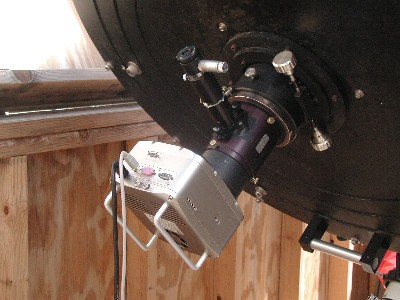
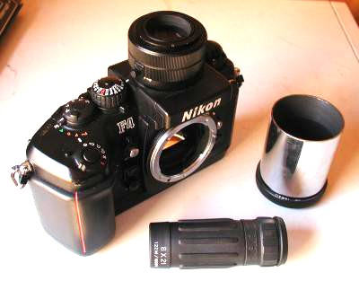
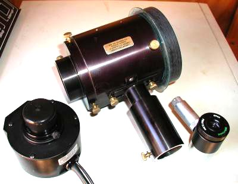
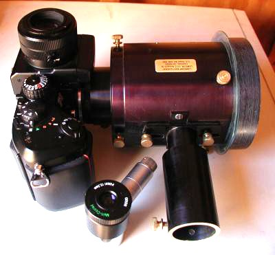
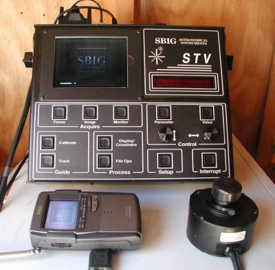

|
|
|
|
This photo shows the complete SBIG STL-11000m/Guider assembly as
used during the setup phase of imaging.
The SBIG STL-11000 CCD camera has an imaging chip about the same size as a 35mm film negative. The Lumicon Giant Easy Guider has the needed large central clear aperture to allow imaging at this size with minimal vignetting. The illuminated reticle eyepiece is used to locate and center a guide star. The entire assembly can be rotated 360 degrees for flexibility in guide-star selection. Once a guide-star is selected, the camera can be rotated independently to achieve the desired framing of the object. Click on photo for a larger image. |
 |
| Note - the photos and text below document my setup from over a year ago when I was doing film astrophotography. I'm using the same STV autoguider and Lumicon Giant Easy Guider, but the Nikon F4 is safely tucked away in storage. | |
|
This is a Nikon F4 camera I use for 35mm astrophotography. I have
replaced the stock pentaprism finder with a 6x magnifying finder (DW-21).
I have also replaced the stock focusing screen with a Nikon M screen,
which has a 5mm clear spot with etched double cross-hairs.
I can see most deep-sky objects directly in the DW-21 finder. For critical focusing, I use the 8x21 monocular shown at the bottom. Before a photography run, I focus this at infinity, then sight through it in daylight at the focusing screen and use the diopter adjustment feature of the DW-21 finder until the etched cross-hairs on the focusing screen are in focus. Then I can focus the telescope/camera setup on aerial images of stars (or planets, or craters) directly when preparing for an astrophoto. To the right of the camera is the 2" tube and t-ring I use to attach the camera to the telescope. Click on photo for a larger image. |
 |
|
At top center is a Lumicon Giant Easy Guider (GEG). The left end
of the GEG has a 2" opening for the camera. The right end has an
adapter that slides into the telescope focusing assembly. The long
slender tube coming out at the side of the GEG is the guiding tube.
Inside the GEG at the bottom of the guiding tube is a small prism
which picks up light from the edge of the field-of-view, and is
used to find a guide-star with which to guide a long-exposure
astrophoto.
At lower right is a 1/2" Orion eyepiece with an illuminated double cross-hair reticle. This is used in the guiding tube to find and center an appropriate guide star. At lower left is the ccd-head of the STV auto-guider, which is placed in the guiding tube after a guide star has been centered. Click on photo for a larger image. |
 |
|
This photo shows the Nikon F4 camera mated to the Giant Easy Guider.
The set-screws on the circumference of the GEG near the camera can be used to rotate the camera to properly frame (orient) the object being photographed. There are similar set-screws at the other (telescope) end of the GEG that allow rotation of the entire camera/GEG assembly, which can be useful in locating a suitable guide-star. There are also two set-screws at the base of the guiding tube which allow about a half inch of longitudinal travel of this tube (toward or away from the telescope), and this is also useful for locating/centering an appropriate guide star. Click on photo for a larger image. |
 |
|
This photo shows the complete camera/guider/autoguider assembly as
used during an astrophoto exposure.
The Giant Easy Guider is inserted into the telescope focusing tube, the camera is inserted into the GEG, and the autoguider head (CCD) is inserted into the guiding tube of the GEG. This entire setup is generally referred to as off-axis guiding, and is often the best option for guiding a long-exposure astrophoto. I had previously tried a different guiding setup using a separate guide-scope (7" Refractor) attached to the telescope tube. While this approach has some advantages in terms of convenience and flexibility, it has the potential problem of "differential flexure," where the optical axis of the main telescope shifts slightly from that of the guiding telescope during the exposure. The result of this flexure is trailed star-images, and it prevents me from using this method with this telescope. Click on photo for a larger image. |

|
|
Shown here is the STV autoguider, made by
Santa Barbara Instrument Group.
(See product review in May, 2003 issue of Astronomy magazine.)
The control box is in the upper center, while the guiding head (CCD) is at lower right. At the top left of the control box is a 5" LCD screen which lets the user see what the CCD head is seeing, and is a major convenience factor in using this equipment. The LCD makes it a simple task to see if a selected guide star is bright enough to use, and to focus and center it on the CCD head. It is also used during guiding runs to show the real-time results of the guiding process. At lower left is a portable TV with a 2.7" LCD screen that I have connected to the video output of the control box. I can take this with me to the telescope and use it to aid in achieving proper focus of the autoguider head (CCD) on a guide star. Click on photo for a larger image. |
 |
{kind=link}
{kind=link}
{kind=link}
{kind=link}
{kind=link}